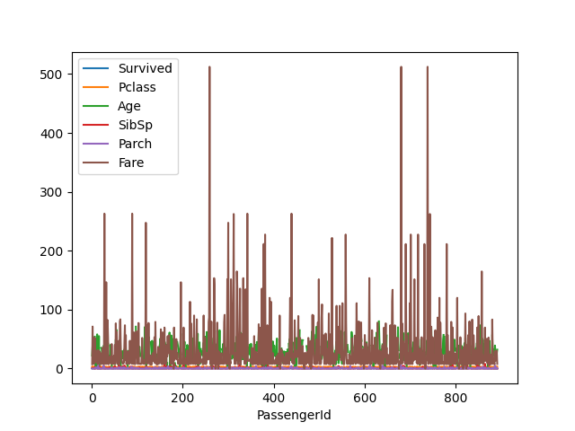

Introduzione a Pandas¶
Pandas è l'ultima delle librerie dell'ecosistema SciPy che tratteremo, ma ciò non toglie che è un pezzo fondamentale dell'intero framework, in quanto viene usata per la lettura ed elaborazione dei dati provenienti da sorgenti di vario tipo.
Installazione e configurazione di Pandas¶
Al solito, provvediamo per prima cosa ad installare Pandas nel nostro ambiente di lavoro.
==="Pip"
pip install pandas
==="Pipenv"
pipenv install pandas
Così come per le altre librerie (eccetto Jupyter), nel prosieguo presupporemo che Pandas sia importato nel nostro script (o, ancora meglio, nel nostro notebook):
import pandas as pd
I dati gestiti da Pandas¶
Pandas gestisce dati tabulari, ossia dello stesso tipo di quelli comunemente contenuti nei fogli di calcolo o nei database. Questi dati sono sicuramente tra i più diffusi ed utilizzati nell'ambito dell'analisi dati, se si escludono le immagini; per modellarli, Pandas ci mette a disposizione un'apposita struttura denominata DataFrame.
Un DataFrame altro non è se non una struttura dati di tipo bidimensionale, adatta a memorizzare dati di ogni tipo, inclusi stringhe, interi, float, ed altro. I dati sono organizzati in righe (rows) e colonne (columns), in maniera concettualmente analoga ad un foglio di calcolo o database; tuttavia, è importante sottolinare come, per convenzione, le singole righe rappresentino i campioni del dataset, mentre le singole colonne siano associate ai valori assunti dalle feature per ciascun campione.
Il primo DataFrame¶
Facciamo un esempio. Scarichiamo il Titanic Dataset, e scompattiamo l'archivio. Al suo interno, troveremo tre file, ovvero gender_submission.csv, test.csv e train.csv. Per gli scopi di questa lezione, ci concentreremo soltanto sull'ultimo.
Spostiamolo per prima cosa all'interno della nostra cartella di lavoro. A quel punto, usiamo questo codice per caricarlo all'interno di un DataFrame:
df = pd.read_csv('train.csv')
Usiamo il metodo head() per mostrare a schermo le prime cinque righe del DataFrame.
>>> df.head()
PassengerId Survived Pclass Name Sex Age SibSp Parch Ticket Fare Cabin Embarked
0 1 0 3 Braund, Mr. Owen Harris male 22.0 1 0 A/5 21171 7.2500 NaN S
1 2 1 1 Cumings, Mrs. John Bradley (Florence Briggs Th... female 38.0 1 0 PC 17599 71.2833 C85 C
2 3 1 3 Heikkinen, Miss. Laina female 26.0 0 0 STON/O2. 3101282 7.9250 NaN S
3 4 1 1 Futrelle, Mrs. Jacques Heath (Lily May Peel) female 35.0 1 0 113803 53.1000 C123 S
4 5 0 3 Allen, Mr. William Henry male 35.0 0 0 373450 8.0500 NaN S
Vediamo poi i tipi di ciascuna delle colonne.
>>> df.dtypes
PassengerId int64
Survived int64
Pclass int64
Name object
Sex object
Age float64
SibSp int64
Parch int64
Ticket object
Fare float64
Cabin object
Embarked object
dtype: object
Notiamo subito la presenza di tre tipi di colonna, ovvero int64, float64 ed object. Laddove i primi due sono autoesplicativi, merita una particolare menzione il tipo object, che viene associato automaticamente a tutte le stringhe.
Suggerimento
Normalmente, usare il tipo object comporta diversi problemi nella successiva fase di analisi dei dati. Potrebbe quindi essere una buona idea parametrizzare la funzione read_csv mediante il parametro dtype, che accetta un dizionario che specifica il tipo di una o più colonne. Ad esempio, se volessimo specificare che i nomi sono delle stringhe, potremmo usare il tipo string:
>>> types = {'Name': 'string'} >>> df = pd.read_csv('train.csv', dtype=types) >>> df.dtypes # ... Name string # ...
Le Series¶
Abbiamo visto come ogni DataFrame sia composto da un insieme di colonne, ciascuna rappresentativa di una feature specifica. In realtà, Pandas offre una rappresentazione apposita per ciascuna di queste colonne, chiamata Series. Ad esempio, se volessimo isolare la colonna relativa agli identificativi numerici dei passeggeri, potremmo usare le seguenti istruzioni:
>>> df['PassengerId'].head()
0 1
1 2
2 3
3 4
4 5
Name: PassengerId, dtype: int64
>>> type(df['PassengerId'])
<class 'pandas.core.series.Series'>
Nota
Possiamo creare sia una Series sia un DataFrame da zero usando gli appositi costruttori. Tuttavia, nella maggior parte dei casi, ci limiteremo a manipolare dati già esistenti.
L'indice del DataFrame¶
Molto importante è l'indice associato al DataFrame od alla Series. Notiamo infatti che, in entrambi i casi precedenti, è stato associato ad ogni riga un indice numerico crescente, che possiamo utilizzare per recuperare uno specifico campione. Potremmo però decidere di usare una colonna del DataFrame come indice (nel nostro caso, ad esempio, PassengerId); per farlo, possiamo passare l'apposito parametro index_col all'interno del metodo read_csv:
df = pd.read_csv('train.csv', index_col='PassengerId')
Verifichiamo che il nuovo DataFrame abbia come indice la colonna PassengerId:
>>> df.head()
Survived Pclass Name Sex Age SibSp Parch Ticket Fare Cabin Embarked
PassengerId
1 0 3 Braund, Mr. Owen Harris male 22.0 1 0 A/5 21171 7.2500 NaN S
2 1 1 Cumings, Mrs. John Bradley (Florence Briggs Th... female 38.0 1 0 PC 17599 71.2833 C85 C
3 1 3 Heikkinen, Miss. Laina female 26.0 0 0 STON/O2. 3101282 7.9250 NaN S
4 1 1 Futrelle, Mrs. Jacques Heath (Lily May Peel) female 35.0 1 0 113803 53.1000 C123 S
5 0 3 Allen, Mr. William Henry male 35.0 0 0 373450 8.0500 NaN S
>>> df.index
Int64Index([ 1, 2, 3, 4, 5, 6, 7, 8, 9, 10,
...
882, 883, 884, 885, 886, 887, 888, 889, 890, 891],
dtype='int64', name='PassengerId', length=891)
Formati di dato (in ingresso ed in uscita)¶
Finora abbiamo usato la funzione read_csv per creare un DataFrame a partire dai dati memorizzati in un file in formato CSV. Tuttavia, Pandas, supporta molti altri formati: ad esempio, potremmo leggere un file XLSX (Excel):
df = pd.read_excel('dati.xlsx')
Attenzione
Per leggere (e scrivere) da (su) Excel è necessario installare la libreria openpyxl (pip install openpyxl).
oppure un file in formato JSON:
df = pd.read_json('dati.json')
o ancora direttamente da un database:
df = pd.read_sql(SQL_QUERY)
Per un elenco completo delle funzioni disponibili, il rimando è alla reference; la sintassi è comunque quasi sempre read_*(data_source), con * da sostituire con il tipo di sorgente dati (csv, excel, etc.).
Esiste anche la funzione duale, che usa il suffisso to_ al posto di read_, e permette di scrivere un DataFrame su file. Ad esempio, se volessimo scrivere su un file XLSX:
df.to_excel('train.xlsx')
Aggiungere feature e dati¶
Aggiunta di una nuova feature¶
Immaginiamo di voler aggiungere una nuova feature ad un DataFrame esistente. Per farlo, iniziamo creando un DataFrame di esempio:
>>> df = pd.DataFrame([1,2,3,4,5], columns=['one'])
>>> df
one
0 1
1 2
2 3
3 4
4 5
Possiamo aggiungere una nuova colonna semplicemente usando l'operatore di assegnazione e specificandone il nome:
>>> df['two'] = df['one'] * 2
>>> df
one two
0 1 2
1 2 4
2 3 6
3 4 8
4 5 10
Aggiunta di nuovi campioni¶
Possiamo poi aggiungere nuovi campioni in coda al DataFrame. Per farlo, possiamo creare un nuovo DataFrame, le cui colonne devono essere coerenti con quello già esistente, e poi usare la funzione insert:
>>> df_add = pd.DataFrame([[6,7]], columns=['one', 'two'])
>>> df.append(df_add)
one two
0 1 2
1 2 4
2 3 6
3 4 8
4 5 10
0 6 7
Concatenazione di DataFrame¶
Possiamo usare la funzione concat per concatenare due (o più) DataFrame. Ad esempio, possiamo concatenare due DataFrame per colonne usando il parametro axis=1:
>>> df_con_col = pd.DataFrame([3,6,9,12,15], columns=['three'])
>>> pd.concat([df, df_con_col], axis=1)
one two three
0 1 2 3
1 2 4 6
2 3 6 9
3 4 8 12
4 5 10 15
Usando il parametro axis=0, si effettua una concatenazione per righe (campioni):
>>> df_con_row = pd.DataFrame([[6,7]], columns=['one', 'two'])
>>> pd.concat([df, df_con_row])
one two
0 1 2
1 2 4
2 3 6
3 4 8
4 5 10
0 6 7
Nota
Notiamo che concat accetta una lista di DataFrame.
Scegliere i dati¶
Dimensioni del DataFrame¶
Per conoscere le dimensioni del DataFrame sotto analisi, possiamo usare l'attributo shape. Ovviamente, l'attributo è analogo a quello usato in NumPy, e restituisce il numero di campioni e feature contenuti nel DataFrame. Ad esempio:
>>> df.shape
(891, 11)
Selezionare un insieme di colonne¶
Immaginiamo di voler selezionare soltanto le colonne relative alle caratteristiche anagrafiche dei passeggeri, ad esempio nome, genere ed età. In modo simile a come si opera su un array NumPy, possiamo usare la seguente notazione:
>>> passengers_anagraphical = df[['Name', 'Sex', 'Age']]
>>> passengers_anagraphical.head()
Name Sex Age
PassengerId
1 Braund, Mr. Owen Harris male 22.0
2 Cumings, Mrs. John Bradley (Florence Briggs Th... female 38.0
3 Heikkinen, Miss. Laina female 26.0
4 Futrelle, Mrs. Jacques Heath (Lily May Peel) female 35.0
5 Allen, Mr. William Henry male 35.0
In pratica, stiamo semplicemente selezionando alcune colonne del DataFrame.
Attenzione
I nomi delle colonne devono essere validi e presenti nel DataFrame.
Selezionare un insieme di campioni in base ad una o più condizioni¶
Supponiamo di voler selezionare soltanto gli uomini maggiorenni presenti nel DataFrame. Per farlo, usiamo la seguente istruzione:
>>> men = df[(df['Age'] > 18) & (df['Sex'] == 'male')]
>>> men.head()
Survived Pclass Name Sex ... Ticket Fare Cabin Embarked
PassengerId ...
1 0 3 Braund, Mr. Owen Harris male ... A/5 21171 7.2500 NaN S
5 0 3 Allen, Mr. William Henry male ... 373450 8.0500 NaN S
7 0 1 McCarthy, Mr. Timothy J male ... 17463 51.8625 E46 S
13 0 3 Saundercock, Mr. William Henry male ... A/5. 2151 8.0500 NaN S
14 0 3 Andersson, Mr. Anders Johan male ... 347082 31.2750 NaN S
In pratica, stiamo filtrando il DataFrame in base a due condizioni:
df['Age'] > 18: questa condizione genera una maschera booleana che èTruesoltanto se l'età per quel passeggero è maggiore di 18 anni;df['Sex'] == 'male': questa condizione genera una maschera booleana che è vera soltanto se il genere del passeggero è maschile.
Possiamo combinare le due condizioni mediante un and logico per ottenere la maschera complessiva:
(df['Age'] > 18) & (df['Sex'] == 'male')
A quel punto, estraiamo i campioni in cui la maschera è vera:
df[(df['Age'] > 18) & (df['Sex'] == 'male')]
Le funzioni loc ed iloc¶
Possiamo anche selezionare dei sottoinsiemi di dati in maniera non dissimile da come faremmo con gli array NumPy. Per farlo, abbiamo a disposizione due funzioni, ovvero loc ed iloc.
Entrambe permettono di selezionare un sottoinsieme di campioni mediante slicing. Ad esempio:
>>> df.loc[:5:2]
Survived Pclass Name Sex ... Ticket Fare Cabin Embarked
PassengerId ...
1 0 3 Braund, Mr. Owen Harris male ... A/5 21171 7.250 NaN S
3 1 3 Heikkinen, Miss. Laina female ... STON/O2. 3101282 7.925 NaN S
5 0 3 Allen, Mr. William Henry male ... 373450 8.050 NaN S
>>> df.iloc[:5:2]
Survived Pclass Name Sex ... Ticket Fare Cabin Embarked
PassengerId ...
1 0 3 Braund, Mr. Owen Harris male ... A/5 21171 7.250 NaN S
3 1 3 Heikkinen, Miss. Laina female ... STON/O2. 3101282 7.925 NaN S
5 0 3 Allen, Mr. William Henry male ... 373450 8.050 NaN S
La differenza tra le due funzioni sta principalmente nell'indicizzazione delle colonne. Infatti, la funzione loc si attende il nome della colonna:
>>> df.loc[:5, 'Survived']
PassengerId
1 0
2 1
3 1
4 1
5 0
D'altro canto, iloc (composizione di integer location) si attende l'indice numerico, su cui si può ovviamente anche applicare lo slicing:
>>> df.iloc[:5, 0]
PassengerId
1 0
2 1
3 1
4 1
5 0
Visualizzazione dei dati in Pandas¶
Pandas offre un supporto nativo ad un backend Matplotlib per la visualizzazione dei dati; per farlo, basta usare la funzione plot() su una Series o su un intero DataFrame. Ad esempio, se volessimo plottare le età dei passeggeri:
>>> df['Age'].plot()
>>> plt.show()
Il risultato sarà mostrato in figura.

Possiamo anche fare il plot dell'intero DataFrame:
>>> df.plot()
>>> plt.show()
Il risultato è mostrato in figura.

Istogrammi ed altro¶
Ovviamente, è possibile usare Pandas anche per fare il plot di altri tipi di grafico, come ad esempio gli istogrammi. Per farlo, si usano le apposite sotto-funzioni di plot:
>>> df['Age'].plot.hist()
>>> plt.show()
Il risultato è mostrato in figura.

Statistiche su un DataFrame¶
Pandas ci mette a disposizione delle funzioni, simili a quelle offerte da NumPy, per calcolare delle statistiche per ciascuna delle colonne presenti in un DataFrame. Ad esempio:
>>> df.mean()
PassengerId 446.000000
Survived 0.383838
Pclass 2.308642
Age 29.699118
SibSp 0.523008
Parch 0.381594
Fare 32.204208
dtype: float64
Ovviamente, esistono funzioni anche per calcolare varianza (df.var()), mediana (df.median()), deviazione standard (df.std()), e via discorrendo.
Particolarmente interessante è la funzione describe(), che ci mosta tutte le statistiche più significative per ognuna delle feature considerate.
>>> df.describe()
PassengerId Survived Pclass Age SibSp Parch Fare
count 891.000000 891.000000 891.000000 714.000000 891.000000 891.000000 891.000000
mean 446.000000 0.383838 2.308642 29.699118 0.523008 0.381594 32.204208
std 257.353842 0.486592 0.836071 14.526497 1.102743 0.806057 49.693429
min 1.000000 0.000000 1.000000 0.420000 0.000000 0.000000 0.000000
25% 223.500000 0.000000 2.000000 20.125000 0.000000 0.000000 7.910400
50% 446.000000 0.000000 3.000000 28.000000 0.000000 0.000000 14.454200
75% 668.500000 1.000000 3.000000 38.000000 1.000000 0.000000 31.000000
max 891.000000 1.000000 3.000000 80.000000 8.000000 6.000000 512.329200
La funzione groupby¶
Possiamo sfruttare la funzione groupby per raggruppare insiemi di dati (normalmente pertinenti a categorie).
Ad esempio, potremmo raggruppare i passeggeri per genere:
>>> df.groupby(['Sex'])
Possiamo ovviamente estrarre delle statistiche a partire da questi raggruppamenti. Vediamo, ad esempio, l'età media dei passeggeri di sesso femminile e maschile:
>>> df.groupby(['Sex'])['Age'].mean()
Sex
female 27.915709
male 30.726645
Name: Age, dtype: float64